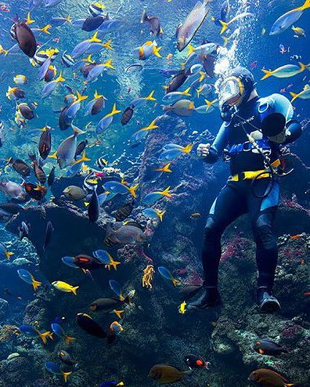
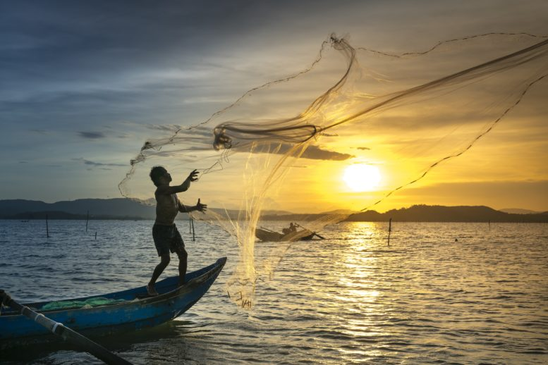
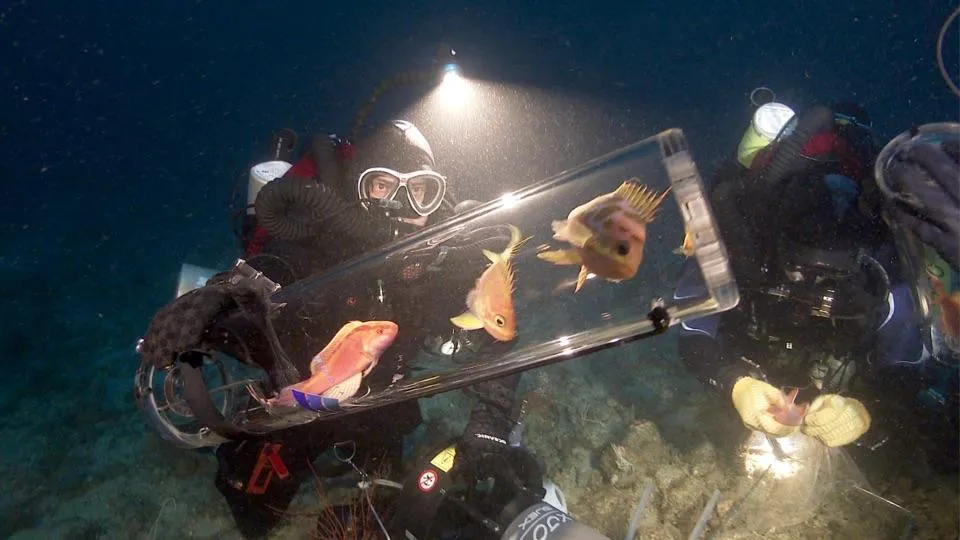
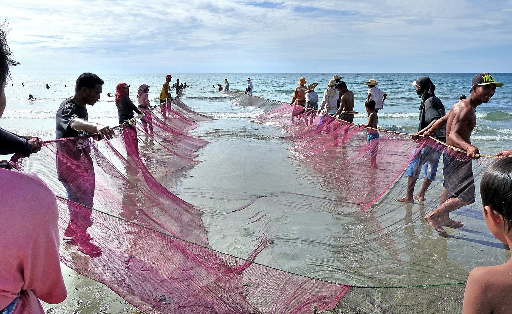
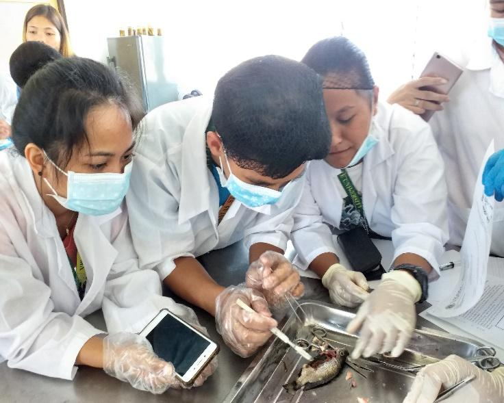
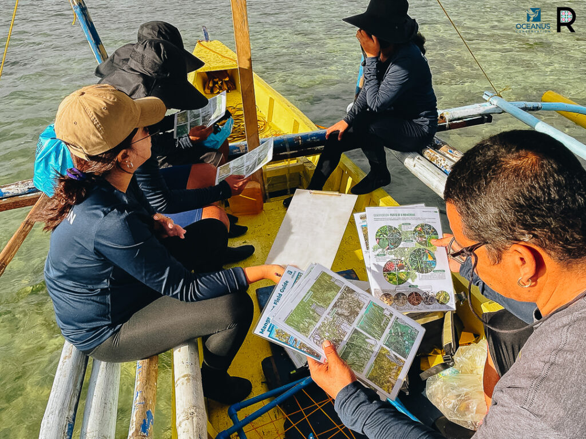
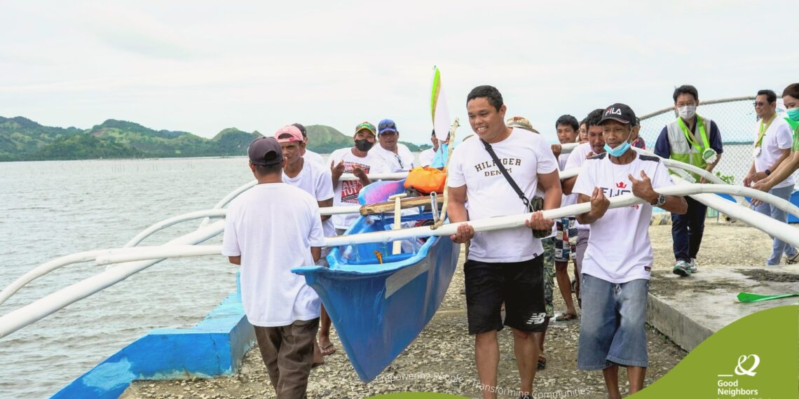
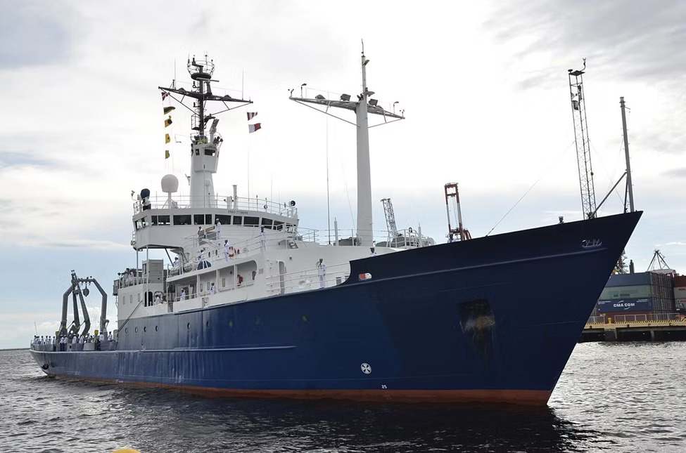

Marine Biodiversity
Species & All Fishes
Rare and notable fish species discovered across the Philippine archipelago and deep ocean waters.
Philippine Notable Species
Sardines
Sardinella
One of the most important fish species in the Philippines. Large schools can be found in areas such as Cebu and Zamboanga, contributing greatly to the country's fisheries industry and marine biodiversity.
Pelagic · CommercialWhale Shark
Rhincodon typus — Butanding
The largest fish species in the world, found in Donsol, Sorsogon and Oslob, Cebu. A keystone species in marine tourism and ocean conservation in the Philippines.
Vulnerable · ProtectedClownfish
Amphiprioninae
Commonly found in Philippine coral reefs. Lives symbiotically among sea anemones and serves as an important bioindicator of healthy reef ecosystems.
Reef Dweller · SymbioticPufferfish
Tetraodontidae
Found in coastal waters throughout the Philippines. Some species contain powerful tetrodotoxins for defense against predators, making them among the most unique marine fishes in tropical oceans.
Coastal · Toxic DefenseThresher Shark
Alopias
Famous for its extraordinarily long tail used for stunning prey. Malapascua Island in Cebu is one of the few places globally where divers can reliably observe this elusive species.
Pelagic · Rare SightingNapoleon Wrasse
Cheilinus undulatus
One of the largest coral reef fishes in Philippine waters. Considered vulnerable due to overfishing and habitat loss, it plays a critical role in reef ecosystem balance.
Vulnerable · CITES ListedRare & Deep-Sea Species
Megamouth Shark
Megachasma pelagios
One of the rarest shark species in the world. A deep-sea filter feeder discovered only in 1976, using its enormous mouth to sieve plankton from oceanic depths.
Deep Sea · Extremely RareCoelacanth
Latimeria
The "living fossil" — once believed extinct for millions of years. This rare deep-sea fish provides crucial evolutionary insights into the origins of marine vertebrates.
Living Fossil · Critically RareMandarin Fish
Synchiropus splendidus
Renowned for its breathtaking blue, orange, and green patterns. Considered one of the most visually spectacular reef fish and commonly found in Pacific coral reef ecosystems.
Reef · Bioluminescent PatternsLeafy Seadragon
Phycodurus eques
A rare marine fish closely related to seahorses. Its elaborate leaf-like appendages provide exceptional camouflage among seaweed, rendering it nearly invisible to predators.
Masters of CamouflageBarreleye Fish
Macropinna microstoma
Recognized by its transparent head and upward-facing tubular eyes, allowing vision in the darkness of the deep ocean. Among the most otherworldly fish ever discovered.
Deep Sea · Transparent HeadGoblin Shark
Mitsukurina owstoni
Recognizable by its elongated snout and extendable, slingshot-like jaws. A true "living fossil" of the deep sea with lineage tracing back over 125 million years.
Ancient Lineage · Deep SeaIntroduction
Philippine Marine Science

Introduction to Philippine Marine Science
Welcome to Philippine Marine Science
The philippines is an archipelagic country composed of more than 7,000 islands and surrounded by rich marine ecosystems. Because of its location within the Coral Triangle, the country is recognized as one of the world's centers of marine biodiversity. Philippine waters are home to thousands of marine species, including colorful coral reefs, mangroves, seagrasses, fishes, sea turtles, and marine mammals. Marine science helps people understand the importance of oceans and coastal resources in supporting food, livelihoods, tourism, transportation, and environmental balance. It also focuses on studying marine ecosystems, protecting endangered species, promoting sustainable fishing practices, and addressing environmental problems such as pollution, climate change, coral bleaching, and overfishing. This website aims to introduce users to the importance of Fisheries Science and Marine Science in the Philippines. It provides information about marine biodiversity, conservation efforts, sustainable resource management, and the role of communities in protecting the country's oceans for future generations.

Fisheries in the Philippines
Overview of Fisheries in the Philippines
Fisheries is one of the most vital sectors in the Philippines, an archipelagic country made up of over 7,000 islands and surrounded by rich marine ecosystems. Due to its unique geographic location, the country is among the most biologically diverse marine regions in the world, and fisheries serves as a primary source of livelihood, food supply, and income for millions of Filipinos.
Philippine fisheries are divided into two major categories: Capture Fisheries — which harvests aquatic resources from natural waters and accounts for 44.1% of total production volume and 62.3% of industry value — and Aquaculture. Capture Fisheries has two types: Municipal Fisheries (operations within 15km of shore using small or non-motorized boats, regulated by local governments) and Commercial Fisheries (large-scale fishing beyond municipal waters using bigger vessels).
Over 2.29 million fisherfolk depend on the sector, with many more in related jobs. It contributes about 12% of agriculture output and 1.5% of the country's GDP. In 2023, production reached 4.26 million metric tons worth Php 328.74 billion. The Philippines ranks 11th in fish production and 4th in aquatic plants globally.

Fisheries found in PH + Global Marine Science
Background
The question of how many marine species exist is important because it provides a metric for how much we do and do not know about life in the oceans. We have compiled the first register of the marine species of the world and used this baseline to estimate how many more species, partitioned among all major eukaryotic groups, may be discovered.
There are approximately 226,000 eukaryotic marine species described. More species were described in the past decade (around 20,000) than in any previous one. We report that there are approximately 170,000 synonyms, that 58,000–72,000 species are collected but not yet described, and that 482,000–741,000 more species have yet to be sampled. Thus, there may be 0.7–1.0 million marine species total.
Between one-third and two-thirds of marine species are still likely undescribed. Earlier estimates suggesting over one million marine species may be too high. With the current rate of discovery increasing, most marine species could be identified within this century.
To learn more, open this link
Conservation Section: Protection Of Marine Resources
Sustainable Fisheries Management
Marine ecosystems like coral reefs and fish populations are threatened by overfishing, destructive fishing, and pollution, which reduce biodiversity and affect coastal communities that depend on them for food and income. In the Philippines, many fisheries are already unsustainable due to illegal and excessive fishing.
Marine Protected Areas (MPAs) help address this by restricting fishing to allow marine life to recover and restore coral reef health. When well managed, MPAs increase fish populations and biodiversity in and around protected zones.
Community-Based Management (CBM) also supports conservation by involving local communities in protecting resources and enforcing fishing rules. Programs like Fish Forever encourage this participation. However, some MPAs are poorly enforced, so stronger management and sustainable fishing practices are still needed.
Visual Archive
Gallery
A visual record of fieldwork, ecosystems, and the ocean's hidden world.

Coral Reef Survey
Coral reef surveys are essential in protecting Philippine marine ecosystems. Through continuous monitoring, researchers can assess reef conditions, guide conservation efforts, and help preserve biodiversity for future generations. Despite many reefs facing degradation, protected areas and restoration projects show that recovery is possible with proper management and conservation.

Field Survey
Field studies in the Philippines are important for understanding real-life conditions in communities and the environment. They allow researchers and students to collect accurate information through observation, interviews, surveys, and direct experiences. In fields such as Fisheries and Marine Science, field studies help in monitoring marine biodiversity, coral reefs, mangroves, and fishing practices.

Laboratory Work
Lab work in Fisheries and Marine Science in the Philippines is essential for understanding aquatic ecosystems in a controlled and scientific way. It supports field studies by providing accurate data analysis and helps improve fisheries management, aquaculture production, and marine conservation efforts.

Coastal Ecosystem
The coastal ecosystems of the Philippines are vital natural systems that support biodiversity, food supply, and livelihoods. They protect coastal communities while providing resources for fisheries and tourism. However, these ecosystems are fragile and face threats from human activities and climate change.

Community Outreach
Community outreach in the Philippines plays a vital role in supporting disadvantaged communities and promoting sustainable development. Through health services, education, environmental programs, and disaster relief, different organizations and volunteers work together to address social needs and improve overall community well-being.

Research Vessel
Research vessels in the Philippines play a crucial role in exploring and understanding the country's vast marine environment. Operated by government agencies, military units, and universities, these ships provide valuable scientific data that supports fisheries management, environmental protection, and marine research development.
Collaboration
Get In Touch
Let's Connect
Interested in research collaboration or conservation opportunities?